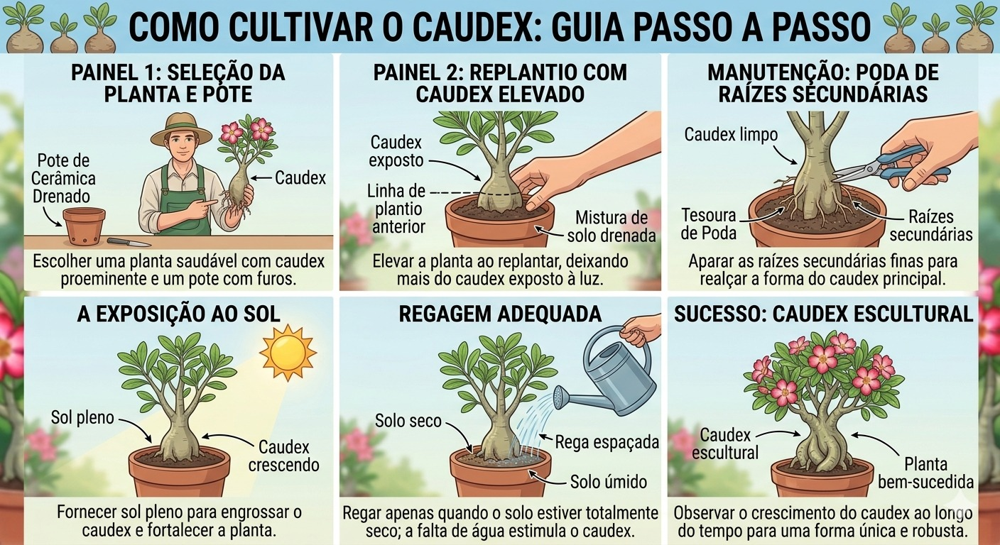

Caudex Alto
Visual imponente, muito valorizado para exposição.
Estrutura, estética e valorização da Rosa do Deserto em uma leitura visual alinhada ao plantio.
Estrutura, estética e valorização da Rosa do Deserto.
Os principais formatos e suas aplicações ornamentais e comerciais.
Visual imponente, muito valorizado para exposição.
Mais compacto, ideal para cultivo doméstico.
Formato artístico com raízes trabalhadas.
Técnica estética avançada, alto valor comercial.
Leitura linear das etapas de evolução do caudex.
Relação entre tipo, dificuldade, tempo e valor final.
| Tipo | Dificuldade | Tempo | Valor |
|---|---|---|---|
| Alto | Médio | Lento | Alto |
| Bonsai | Alto | Muito lento | Muito alto |
| Raiz exposta | Alto | Médio | Alto |
Pontos de atenção que mais derrubam a qualidade do caudex.
O caudex é o principal fator estético e comercial da planta. Técnicas corretas aumentam drasticamente o valor final.
A sequência abaixo mostra a evolução do caudex desde a formação inicial até o acabamento estético que aumenta o valor ornamental.
